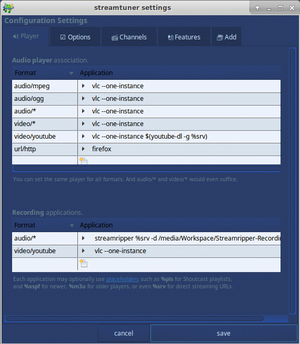
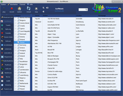
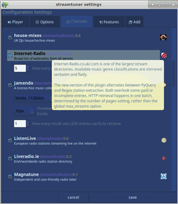

Streamtuner2
Dieser Artikel wurde für die folgenden Ubuntu-Versionen getestet:
Ubuntu 16.04 Xenial Xerus
Zum Verständnis dieses Artikels sind folgende Seiten hilfreich:
Streamtuner2  ist ein von milki in Python verfasstes Programm zur Wiedergabe und Aufzeichnung von Internetradio. Namenspate ist das Programm Streamtuner, das nicht mehr weiterentwickelt bzw. gepflegt wird. Mit Streamtuner2 kann auf eine Vielzahl verschiedener Anbieter und Portale zugegriffen werden:
ist ein von milki in Python verfasstes Programm zur Wiedergabe und Aufzeichnung von Internetradio. Namenspate ist das Programm Streamtuner, das nicht mehr weiterentwickelt bzw. gepflegt wird. Mit Streamtuner2 kann auf eine Vielzahl verschiedener Anbieter und Portale zugegriffen werden:
Jamendo (Browser und Ogg/MP3 Download)
MyOggRadio (Open Source Stream-Verzeichnis-Projekt)
The MOD Archive
(Tracker/MOD-Audiosammlung)Youtube
(primär Musikvideos, aber mit integrierter Suchfunktion)SomaFM
(statische Liste)PunkCast
(historisches Plugin)UbuntuUsers Radio-Liste
 (direkt aus dem Wiki)
(direkt aus dem Wiki)
Außerdem gibt es zahlreiche Plugins (listenlive, reddit, magnatune, delicast, etc), mit denen das Programm erweitert werden kann. Zur Audio-Aufnahme greift Streamtuner2 auf Streamripper zurück. Auch die Wiedergabe von Internet-TV-Programmen ist möglich. Das Programm kann auch ohne grafische Oberfläche auf der Kommandozeile verwendet werden.
Alternativen sind Programme wie TunaPie oder das Rhythmbox SHOUTcast Plugin. Eine kleine Liste ist im Artikel Internetradio aufzeichnen zu finden. Zusätzlich gibt es noch eine Liste mit Empfehlungen im projekteigenen Wiki .
Installation¶
Die Anwendung liegt in den offiziellen Paketquellen vor und kann über die folgenden Pakete installiert [1] werden:
streamtuner2 (universe)
streamripper (universe)
 mit apturl
mit apturl
Paketliste zum Kopieren:
sudo apt-get install streamtuner2 streamripper
sudo aptitude install streamtuner2 streamripper
Optional sind verschiedene Abspielprogramme (AudioPlayer, siehe Konfiguration).
Es erscheint danach bei Ubuntu-Varianten mit einem Anwendungsmenü unter "Multimedia -> streamtuner2". Ansonsten kann es mit dem Befehl streamtuner2 gestartet werden [2].
Fremdpaket¶
Die aktuelle Version kann als .deb-Paket  heruntergeladen und manuell installiert [3] werden.
heruntergeladen und manuell installiert [3] werden.
Hinweis!
Fremdpakete können das System gefährden.
Python-Paket ohne Installation¶
Seit der Version 2.1.5 ist das Programm auch ganz ohne Installation nutzbar. Python erlaubt sogenannte .pyz-Pakete. Das sind schlichtweg ZIP-Dateien, die den Quellcode einbetten. Ideal zum Testen oder für parallele Installation. Man kann sie direkt vom Terminal aus starten:
python streamtuner2.pyz
Alternativ lässt sich die Datei auch ausführbar machen (chmod +x) und in z.B. ~/bin/ speichern (dann auch ohne den Dateityp .pyz anzugeben).
Hinweis!
Fremdpakete können das System gefährden.

Konfiguration¶
Beim ersten Start öffnet sich ein Konfigurationsfenster (ansonsten F12 ), in dem Einstellungen angepasst werden können. Auf der Registerkarte "Player" lassen sich für verschiedenen Übertragungsformate geeignete Abspielprogramme für Audio- und Video-Daten getrennt festlegen. Inzwischen wird beim ersten Start automatisch nach verfügbaren Playern gesucht. Gedacht ist die Einstellung natürlich um sein Lieblingsprogramm festzulegen. (Wenn das eingegebene Programm gefunden wurde, wird vor dessen Namen ein "Play"-Symbol angezeigt, anderenfalls das "Stop"-Icon.). Es eignen sich zum Beispiel:
Einen Platzhalter wie %m3u oder %pls kann man optional angeben. Das legt nur den Typ der übergebenen Abspiel-Liste ("playlist") fest. Und der ist mittlerweile weniger relevant, da die meisten Programme sowieso alle Varianten unterstützen. Für ganz moderne Player eignet sich das kryptische %xspf als Platzhalter, wodurch mehr Radio-Informationen mitgeliefert werden.
Außerdem kann der gewünschte Webbrowser für das Anzeigen von Sender-Homepages konfiguriert werden.
Im Abschnitt "Recording applications" wird definiert, welche Programme für das Aufnehmen von Streams verwendet werden. Der De-facto-Standard für Audiostreams ist streamripper, welches in verschiedenen Linux-Distributionen bereits vorinstalliert ist. Hier muss auch der Pfad angegeben werden, in dem die Aufnahmen gespeochert werden sollen. Der Aufnahmepfad muss absolut sein und mit dem Parameter -d angegeben werden, z.B. -d /home/<Benutzername>/Musik.
Auf der Registerkarte "Options" sind verschiedene Einstellungen zusammengefasst, die für das Programm Streamtuner2 allgemein gelten. Unter "Display" werden die Anzeigeoptionen für das Hauptfenster oder Darstellungsvarianten für die Radioliste festgelegt, unter "System" kann bei Bedarf das Debugging zur Fehlersuche aktiviert werden. Die Verzeichnisse für temporäre Dateien sowie die Konfigurationsdateien werden lediglich angezeigt. Sie können nicht geändert werden.
Die Registerkarten "Channels" und "Features" enthalten Einstellungen für die verschiedenen Streamtuner2-Plugins. Zu allen Einstellungen erscheinen Tooltips, wenn man mit der Maus über den entsprechenden Einträgen verweilt. (siehe Plugins).
Hinter der Registerkarte "Add" verbirgt sich der Plugin Manager II, mit dem sich optionale Plugins über das Internet installieren oder Aktualisierungen für bereits installierte Plugins herunterladen lassen.
Bedienung¶
 Die Bedienung ist denkbar einfach: Im Hauptfenster zum gewünschten Sender navigieren und diesen anklicken. Es öffnet sich der eingestellte Player mit dem Sender. Aufnahmen erfolgen über die Aufnahme-Taste oben im Hauptfenster. Die Titel werden im angegebenen Verzeichnis – in Abhängigkeit von der Quelle – als MP3- oder OGG-Datei gespeichert.
Bevorzugte Sender lassen sich als "Bookmarks" speichern, um sie schnell wieder finden zu können. Dazu wird der Sender über "Station -> Add bookmark" (oder F8 ) ausgewählt.
Um Streamtuner2 mit einem Proxy-Server zu verwenden, muss das Programm mit der Umgebungsvariable http_proxy=... (bitte anpassen) gestartet werden. Beispiel [4]:
/usr/bin/env HTTP_PROXY="http://127.0.0.1:8118" && streamtuner2
Plugins¶
 Plugins gibt es für zusätzliche Channels sowie allgemeine Funktionserweiterungen von Streamtuner2.
Hier eine Auswahl:
"File browser": Anzeigen und Abspielen von lokalen Mediendateien in konfigurierbaren Verzeichnissen. Wenn Python Mutagen installiert ist, werden auch die ID3-Informationen (Titel, Künstler, Album, Genre) sowie Länge und Bitrate angezeigt.
"Recording timer" erlaubt das Programmieren von Aufnahmezeiten (
 -Klick auf "Station -> Add timer for station") oder automatisches Abspielen. Nützlich als Weckfunktion, aber ohne Funktionsgewähr.
-Klick auf "Station -> Add timer for station") oder automatisches Abspielen. Nützlich als Weckfunktion, aber ohne Funktionsgewähr."Stop button" zum Beenden einer streamripper-Aufnahme.
"Spec buttons for apps". Hiermit lassen sich zusätzliche Icons z.B. für die Lautstärkeregelung oder zum Beenden des Audioplayers definieren, die in der Toolbar angezeigt werden.
"History": Hiermit werden automatisch die letzten n abgespielten Sender abgespeichert.
"Config save/import/reset" erlaubt das Sichern und Wiederherstellen der Streamtuner2-Konfiguration oder das Zurücksetzen in den Grundzustand.
"Global keyboard shortcut" definiert im Einstellungsmenü ein Tastenkürzel, mit dem sich bequem zwischen allen Sendern in den eigenen Favoriten wechseln lässt.
"Export Category" erlaubt das Exportieren von Radio-Abspiellisten (.PLS, oder .M3U, .XSPF, .ASX, .SMIL) oder das Sichern der eigenen Bookmarks.
"Radio Tray hook" vereinfacht das direkte Exportieren von Radiostationen in das Radio Tray-Taskleisten-Programm. Hierfür jedoch ist ein kleine Quellcode-Anpassung notwendig.
Neue Funktions- oder Channel-Plugins können über den User Plugin Manager II (Registerkarte "Add" im Eigenschaften-Dialog) heruntergeladen werden. Es handelt sich um einfache Python-Skripte (*.py). Mit Root-Rechten [4] können sie in den Ordner /usr/share/streamtuner2/channels/ kopiert werden.
Oberfläche (Skins, Themen)¶
Streamtuner2 verwendet das Gimp Toolkit (Gtk+) zur Darstellung seiner Benutzeroberfläche. Damit kann seine Oberfläche durch die Zuordnung eines anderen Gtk-Themas prinzipiell verändert werden.
Es stehen hierfür zwei neue Plugins zur Verfügung: Gtk2 theme installer und Gtk theme setting. Mit dem "Theme Installer"-plugin können Gtk2-Themen heruntergeladen werden, die speziell für Streamtuner2 angepasst wurden, und die auf Ubuntu 12.04 und 16.04 auch funktionieren. Sie werden nach Aktivierung des Plugins in einem zusätzlichern Register in den Bookmarks angezeigt.
Mit dem "Theme Setting"-Plugin kann zwischen den auf dem System vorgefundenen Gtk-Themen gewechselt werden. Hierbei ist jedoch zu beachten, dass nicht jedes beliebige Gtk-Thema verwendet werden kann. Im schlimmsten Fall hängt Streamtuner2 nach der Aktivierung eines Themas.
CLI (Command Line Interface)¶
Als zusätzliches Feature kann Streamtuner2 auch aus einem Terminal [4] heraus bedient werden. Einige grundlegende Funktionen stehen als Befehle zur Verfügung. Allerdings muss das Programm zunächst einmal in der graphischen Variante gestartet worden sein, weil andernfalls keine Radio-Daten zur Verwendung vorliegen. Mit
streamtuner2 play "top 100"
kann man die erstbeste Radiostation starten, die im Titel top 100 enthält. Mit
streamtuner2 url "frequence3"
wird hingegen nur die URL ausgegeben und nicht der vorkonfigurierte Audioplayer gestartet.
Zur Verwendung aus anderen Programmen heraus sind die Optionen dump und stream gedacht. Es ist auch möglich, frische Radiodaten im JSON-Format ausgeben zu lassen. Hierfür gibt es den Befehl:
streamtuner2 category "shoutcast" "Kategorie"
Weitere Sender hinzufügen¶
Um weitere Sender hinzuzufügen, muss derzeit noch ein "Umweg" beschritten werden: Man erstellt einen Favoriten, kopiert diesen Eintrag, fügt ihn ein und editiert ihn entsprechend. Ein weiterer Weg besteht darin, auf myoggradio einen Eintrag vorzunehmen, der dann über Streamtuner2 abgespielt werden kann.
Tastenkürzel¶
| Streamtuner2 | |
| Tasten | Funktion |
| F8 | bookmark (Lesezeichen setzen) |
| Strg + S | Speichern unter |
| Alt + ⏎ | Bearbeiten |
| Strg + Q | Beenden |
| Strg + C | Kopieren |
| Strg + X | Löschen |
| Strg + F | Suchen |
| F12 | Eigenschaften |
| F5 | Reload (neu laden) |
Problembehebung¶
Leere Kategorien-Liste:
Nicht alle Plugins stellen beim ersten Start eine komplette Liste der Kategorien/Genres bereit. Das Aktualisieren ist aus Geschwindigkeitsgründen nicht Standard, kann aber über den Menüeintrag Channel -> Reload Category Tree nachgeholt werden.
Channel -> Reload Category Tree nachgeholt werden.Backup der Lesezeichen erstellen:
Hierfür steht in erster Linie das Plugin Export Category zur Verfügung. DasStation-Menü enthält dann den zusätzlichen Eintrag "Extensions" - "Export all stations". Hiermit lässt sich jede beliebige Channels-Ansicht speichern.
Streamtuner2 hält sich an den Freedesktop-Standard für Konfigurationsdateien. Alle Anwendungsdaten finden sich unter ~/.config/streamtuner2/. Will man die Favoriten sichern, kopiert man daher einfach die Datei bookmarks.json. Jedoch enthält die Datei alles, was in der Bookmarks-Ansicht angezeigt wird, also auch den Verlauf, die Gtk2-Themen, Timer-Events usw.
Programmeinstellungen befinden sich in der Datei settings.json.
Zum Sichern und Wiederherstellen der kompletten Streamtuner2-Konfiguration steht auch das Plugin Config save/import/reset zur Verfügung.Es werden keine Radios geladen:
Oftmals ändern die Dienstebetreiber ihre Webseiten. Dann funktioniert das Auslesen nicht mehr. Bei einigen Plugins (SHOUTcast) kann man aber in den Optionen ( F12 ) zwischen verschiedenen Parsern wählen. Reguläre Ausdrücke sind schneller, aber der "[x] PyQuery parsing" mitunter verlässlicher. Startet nur eines der Channel-Plugins nicht richtig, kann man es ebenso einfach einzeln deaktivieren:streamtuner2 -d xiph
Programm hängt beim Start:
Generell kann man Streamtuner2 über ein Terminalfenster starten. Hier gibt es die Option-Dfür weitere Debug-Meldungen. Auf rot markierte Ausgaben achten.streamtuner2 -D
Wiedergabe "falscher" Sender:
Gerade die älteren Versionen (2.0.x) hatten einige Gtk-Fehler. Nach einer Sortierung der Radio-Listen wurden die falschen Sender abgespielt. Hier half nur F5 , um die Anzeige wieder in die richtige Reihenfolge zu bringen. Aktuelle Versionen erlauben das Umsortieren nicht mehr, wodurch dieser bekannte Fehler nicht mehr auftritt.Speicherpfad für Mitschnitte:
Falls sich dieser nicht über die GUI ändern lässt, bearbeitet man die Datei ~/.config/streamtuner2/settings.json und passt folgende Zeile an:"audio/*": "lxterminal -e \"streamripper %srv -d /PFAD/ZUM/ORDNER\"",
Wer ein anderes Terminalprogramm benutzt, ersetzt auch
lxterminaldurch das jeweilige Programm.
RadioTray erweitern¶
Spannend ist die Erweiterung für Radio Tray, mit der man einfach neue Bookmarks und Favoriten aus Streamtuner2 nach RadioTray kopieren kann. Es gibt dafür einen neuen Eintrag im Kontextmenü "Keep in RadioTray". Für die volle Funktionalität muss man allerdings selber nachhelfen (siehe auch Original-Anleitung ), weil RadioTray derzeit Wartungspause hat.
Ausreichend ist die Anpassung nur einer Datei von RadioTray, nämlich /usr/share/pyshared/radiotray/DbusFacade.py. Dafür benötigt man Root-Rechte und verwendet am besten einen Terminal-Editor. Die notwendige Ergänzung ist denkbar schlicht:
@dbus.service.method('net.sourceforge.radiotray')
def addRadio(self, title, url, group="root"):
self.dataProvider.addRadio(title, url, group) Diesen Python-Quellcode kann man beliebig zu den anderen Einträgen wie def playRadio reinkopieren. Einzig wichtig ist hier nur auf die richtige Anzahl von Leerzeichen (Einrückung) zu achten: In der Regel vier ab Zeilenanfang. Der eingefügte Code muss zwingend genauso ausgerichtet sein wie der bestehende.
Links¶
Streamtuner2
auf SourceForge
Ankündigungen/Versionshistorie
auf freshcode.club
Diskussion im hiesigen Forum für Anregungen, Anfragen, Probleme und Support
- Erstellt mit Inyoka
-
 2004 – 2017 ubuntuusers.de • Einige Rechte vorbehalten
2004 – 2017 ubuntuusers.de • Einige Rechte vorbehalten
Lizenz • Kontakt • Datenschutz • Impressum • Serverstatus -
Serverhousing gespendet von